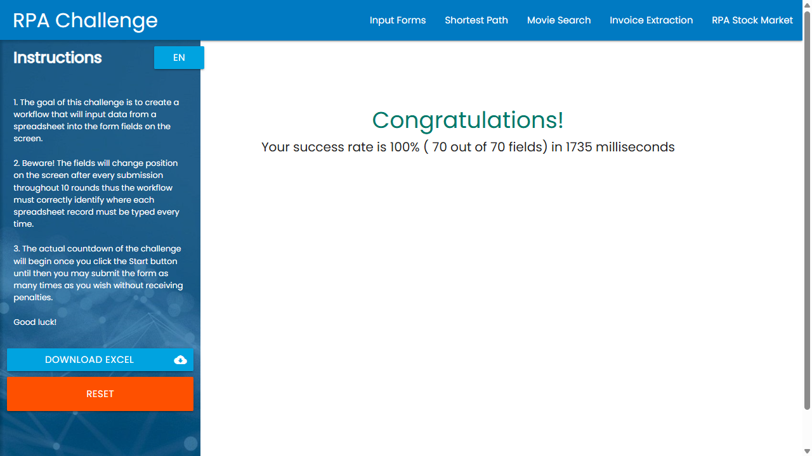
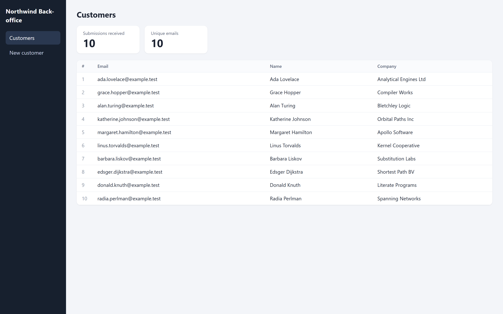
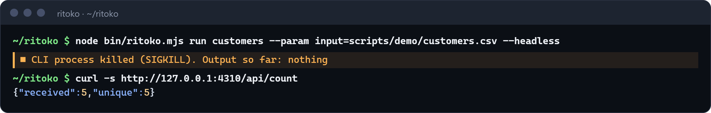
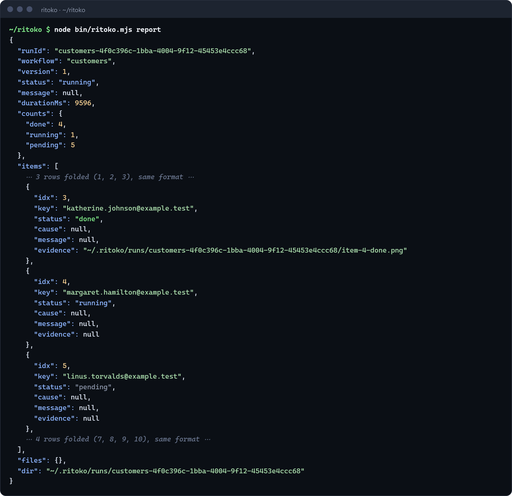
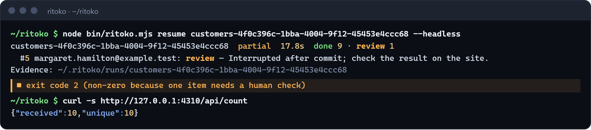
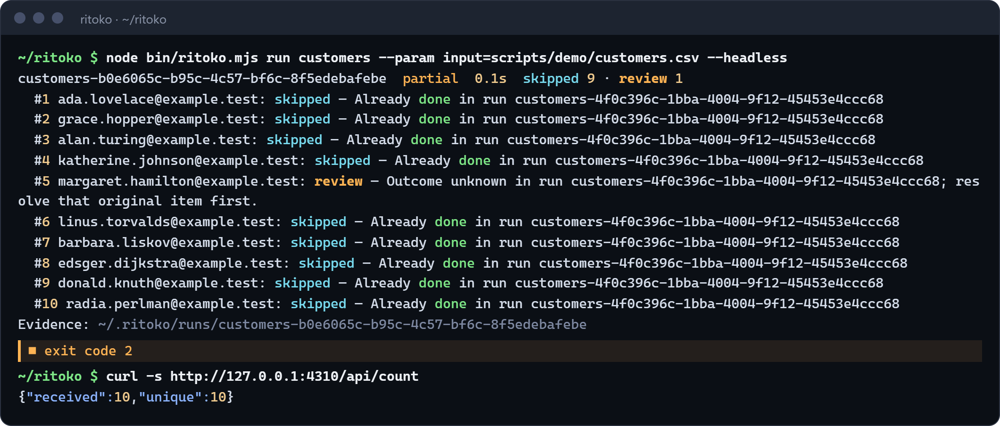

v0.1MITClaude Code + Codex CLI
Do the browser task once.
Replay it for every row.
Ritoko turns a web task your coding agent solved once into a workflow that replays from your spreadsheet without a model, checks every item, survives a crash and never resubmits a row it journaled: done rows are skipped, uncertain ones held for review.
claude plugin marketplace add Swih/ritoko && claude plugin install ritoko@ritoko
codex plugin marketplace add Swih/ritoko && codex plugin add ritoko@ritoko
Needs Node 24+ and Google Chrome. Open source, MIT.
§ 01
Record once. Replay forever. Resume safely.
Every row of your spreadsheet becomes an item in a journal. Here is what happens to those items, in four beats.
-
Your agent does the task once in Ritoko's Chrome window. Every action becomes a step with a selector built from role, label or visible text, checked to be unique on the page. One step is marked
commit: the point of no return. -
Playwright replays the workflow for each row, with no model in the loop. Each item is verified with
expectand written to a SQLite journal as done. -
The process is killed while row 5 is past its commit. The journal still says running with the commit recorded, so nobody can tell whether the site received it.
-
On resume, row 5 becomes review: it is never replayed blindly. The rows left run normally. Run the same spreadsheet again later and every finished row is skipped, while row 5 stays held until someone checks the site.
The animated diagram needs JavaScript. The four beats are described alongside.
Item states: pending running done review skipped The row keys are illustrative. The state rules are the engine's.
§ 02
On the record
Measured on 3 October 2026 with Ritoko 0.1.0, Node 24.19, Chrome 154 (headless) on Windows. Counts come from the run journal and from the sites' own counters.
- 100%
- RPA Challenge, replayed without a model. 70/70 fields over 10 shuffled rounds in 1.74 s by the site's own timer, 3.6 s end to end including the workbook download. Codex CLI recorded the challenge through Ritoko by itself.
- 10/10
- Unique submissions after a hard kill. A batch of 10 was killed with SIGKILL at row 5, then resumed. The back office received 10 submissions, 10 unique. Row 5 had already gone through; it was held as review instead of being sent again.
- 0.1 s
- Rerunning the same CSV. 9 rows skipped as already done, row 5 still held for review, nothing submitted again. 0.1 s in the journal, 0.6 s wall clock. No model call during any replay.


The killed batch, from a terminal
The CLI process is killed with SIGKILL mid-batch. The test server has received 5 submissions, 5 unique.

What the journal knows: 4 done, 1 running (row 5, past its commit), 5 pending.

Resume does only what is left: done 9, review 1, exit code 2 because one item needs a human check.

The same CSV again: 9 skipped, row 5 still blocked, the server still at 10 received, 10 unique.


§ 03
How it works
A plugin made of three parts: a skill that tells your agent how to record, a local MCP server that drives Chrome, and a CLI that replays without any agent.
-
Record
The agent opens the start page in Ritoko's Chrome window and does the task for real, with the first row's values. Ritoko returns a selector for each action and checks it is unique.
-
Save
The agent writes the workflow: parameters, the batch source (Excel or CSV), a business key per item, one
commitstep andexpectchecks that prove each row worked. -
Replay
Ritoko executes the workflow with Playwright, without a model, and journals every item in SQLite. Each run freezes its workflow definition and its input rows.
-
Repair
If the site changed and a selector no longer matches, the run pauses with the page left open. The agent inspects it, repairs that step's target, and resumes. Done items stay done.
{
"name": "rpa-challenge",
"version": 4,
"items": {
"from": "{{files.challenge.xlsx}}",
"key": "{{item.Email}}"
},
"setup": [ … goto, download the workbook, click Start … ],
"item": [
{
"id": "s4",
"do": "fill",
"target": {
"primary": {
"by": "xpath",
"xpath": "//label[normalize-space()='Address']/following::input[1]"
},
"fallbacks": []
},
"value": "{{item.Address}}"
},
… six more fills, one per labelled field …
{
"id": "s11",
"commit": true,
"do": "click",
"target": {
"primary": { "by": "role", "role": "button", "name": "Submit" }
}
},
{ "id": "s13", "do": "expect", … }
],
"teardown": [
{
"id": "s12",
"do": "expect",
"target": {
"primary": { "by": "text", "text": "Your success rate is 100%" }
}
}
]
}- key The business key. A row whose key is already done in this workflow is skipped.
- xpath The challenge shuffles fields and randomizes ids every round, so this target is anchored on the visible label rather than on an id or a position.
- commit The point of no return. An item interrupted after this step becomes review.
- expect Proof on the page. An item is done only when its checks pass.
Selector order of preference
- Role and accessible name
- Label or placeholder
- Test id
- Text anchored on a label, or visible text
- Last resorts: name, id or position
Ids, names and positions are used only when nothing readable is unique, and a bare positional path is flagged fragile for the agent to replace. Each element gets a primary selector plus fallbacks, each verified unique when recorded.
§ 04
The safety contract
Every item ends in exactly one state. The state decides what happens on resume and on every later run.
| State | Meaning | On resume | On a later run |
|---|---|---|---|
| done | Verified by the workflow's expect steps. |
Kept. | Skipped. The same key with different data is blocked, not silently skipped. |
| failed | Failed before submission. Nothing irreversible happened. | Retried from the start of the form. | Runs again. |
| review | Submission may have happened, or confirmation failed after it. | Never replayed. | Blocked, even with repeat, until someone checks the site and resolves it with an evidence note. |
| skipped | Already done by a previous run. | Kept. | Skipped. |
| paused | A selector stopped matching. The page is left open for repair. | Before commit: the form restarts in full. After commit: only verification resumes, on the same live page, or the item becomes review. | Paused after its commit: blocked in any other run until this one finishes or it is resolved. Before its commit: not blocked, nothing was sent. |
The rules a workflow follows
- One irreversible
commitper write item, followed by anexpectthat proves that specific item's result. - Setup is repeatable and free of irreversible changes: it runs again after a crash.
- Deduplication uses workflow name, scope and business key. Scope comes from destination or account, never the file name.
- The whole input is validated before anything runs. Duplicate or empty keys and malformed headers are rejected.
- Rows are frozen in the journal. Editing the spreadsheet does not change a batch being resumed.
- Every manual decision needs an evidence note, and is logged.
What a run reports
- done every item confirmed or skipped, and final checks passed.
- partial some items failed or need review.
- stopped execution could not continue.
The CLI exits with code 2 for partial, stopped and repair pauses, so scripts never mistake them for success.
The journal protects actions executed through this Ritoko installation. It cannot stop a submission made elsewhere, make a website idempotent, or guess success from a generic message: the business checks are yours to write.
§ 05
Why not just ask Claude for a Playwright script?
You can, and for a one-off task you should. A generated script also replays without a model, and it is yours to read and change.
What a script does not come with is the bookkeeping around it: which rows already went through, what happened to the row in flight when the laptop slept, how to rerun Monday's file without resubmitting Friday's rows, and what to do when the site renames a button.
Ritoko is that bookkeeping, written once: a per-item journal, a commit boundary, a review state for the uncertain case, selectors chosen while the agent is looking at the real page, and a repair loop that resumes instead of restarting. If you would rather build those yourself, a script is a fine choice.
| Capability | Ritoko | Generated one-off Playwright script | Claude in Chrome shortcuts1 | Codex Record & Replay2 | Browser Use Scripts3 | Playwright MCP recording4 |
|---|---|---|---|---|---|---|
| Journal per item | Built in SQLite, per run | You write it | Not documented | Not documented | Not documented | You write it around the generated code |
| Resume after a crash | Built in frozen rows and definition | You write it | Not documented | Not documented | Not documented | You write it |
| Duplicate guard | Built in workflow + scope + key | You write it | Not documented | Not documented | Per docs callers reconcile external actions to avoid duplicate work | You write it |
| Review state for uncertain submissions | Built in blocked across runs | You write it | Not documented | Not documented | Not documented | You write it |
| Replay without a model | Built in Playwright | Yes it is code | Per docs Claude repeats the recorded steps | Reported the agent replays the skill, with computer use | Per docs every rerun still starts a model | Yes output is Playwright code |
| Local signed-in Chrome | Built in dedicated profile, logins persist | Configurable persistent context | Documented runs in your Chrome | Reported drives the Mac desktop | Not documented for Scripts | Documented persistent profile |
| Input from Excel or CSV | Built in validated before the run | You write it | Not documented | Not documented | Not documented | You write it |
* As of October 2026, from each product's public documentation. “Not documented” means we did not find it in their public docs, not that it is impossible. Products change quickly: verify against their docs.
- Shortcuts are recorded in the Claude in Chrome extension. Recording them from Claude Code is not documented.
- Produces a reusable skill that the agent follows on later runs. The macOS app and computer-use replay are reported by secondary sources.
- Browser Use docs state that each later run still starts a model and uses tokens, and ask callers to reconcile external actions before starting duplicate work.
- Action recording to Playwright code was added in September 2026. The output is a script, so the bookkeeping column is the same as a generated script.
§ 06
Advantages and trade-offs
Where it is great
- Recurring forms filled from a spreadsheet, where a double submission costs something.
- Regular exports and downloads with a variable period.
- Sites you are signed in to: the dedicated Chrome profile keeps its sessions.
- Cheap reruns: tokens are spent once at recording, then only for repairs.
- Batches you need to explain afterwards: every item has a state, a message and evidence.
- Unattended runs from a terminal, with no agent and an exit code scripts can trust.
Where it is not the right tool
- Sites behind CAPTCHA or anti-bot protection. Ritoko does not bypass them.
- Sites whose terms forbid automation.
- A one-off task. Just ask your agent.
- Tasks that need judgement on every item. Reading varied documents needs the agent each time.
- Desktop applications. It drives Chrome only.
- Machines without Google Chrome or Node 24.
- Actions taken outside Ritoko: the journal cannot see them.
- Per-site business checks: you, or your agent, write the
expectsteps. - Teams that need a mature tool today. This is v0.1, a new project.
§ 07
Install
Node 24+ and Google Chrome are required. The first start installs the runtime dependencies once, in about six seconds, with lifecycle scripts disabled.
Claude Code
claude plugin marketplace add Swih/ritoko
claude plugin install ritoko@ritoko
Restart Claude Code. The skill and the MCP server load with the plugin.
Codex CLI
codex plugin marketplace add Swih/ritoko
codex plugin add ritoko@ritoko
Restart Codex. The skill and the MCP server load with the plugin.
Requirements
- Node.js 24 or newer
- Google Chrome (or set
RITOKO_CHROME_PATH) - Tested on Windows 11; CI on Linux; macOS untested
On first start the launcher installs its runtime dependencies once (about 6 s, 43 MB), with npm lifecycle scripts disabled and the exact versions of package-lock.json.
Then ask your agent
Record this task with Ritoko: download the September report from …
Rerun the supplier-onboarding workflow with suppliers.csv
Resume my last Ritoko run
§ 08
Questions
Is it safe to point at a real site?
Safer than a loop of clicks, within limits. Each workflow marks one step as the commit. If anything interrupts an item after that step, the item becomes review and is blocked in every later run until someone checks the site and records what happened. Finished keys are skipped, so rerunning a file does not submit its rows twice.
What it cannot do: see submissions made outside Ritoko, make a website idempotent, or know that a generic “Saved” message means success. The expect checks for each site are your job, and your agent's.
What about logins and MFA?
Ritoko uses its own Chrome window with a dedicated profile, so logins persist between runs. When the agent meets a login, MFA prompt or CAPTCHA while recording, it asks you to complete it yourself in that window. The skill tells it never to type your passwords. Ritoko does not detect logins itself: during a replay, a login page where the form was expected pauses the run for repair.
Which sites does it work on?
Web pages in Google Chrome that you are allowed to automate. Not sites with CAPTCHA or anti-bot protection, and not sites whose terms forbid automation. Desktop applications are out of scope.
How many tokens does it cost?
Recording costs what your agent spends doing the task once and writing the workflow. Replay costs none: no model is called. A repair costs tokens only when a site changes and a selector stops matching.
Where does my data go?
Nowhere new. Workflows, the journal, evidence files and the browser profile live on your machine in ~/.ritoko. Ritoko has no server and no telemetry. What leaves your machine is what the sites you automate receive, and what your agent sends to its model provider while it records or repairs. The launcher downloads its npm dependencies once, on first start.
Do I need Claude Code or Codex to replay?
No. The agent is needed to record and to repair. Replays, reports, resumes and review resolutions also work from the ritoko command line.
Can it read invoices or other documents?
Optionally. A downloaded image can be handed to your agent, which reads it with its own model. Ritoko ships no OCR engine. That step uses a model for every new document, so it is not part of model-free replay.